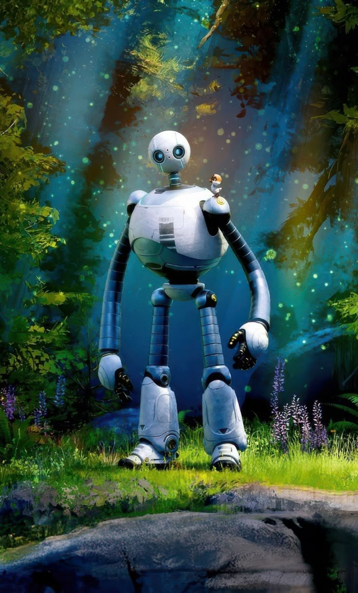
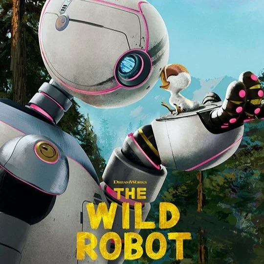
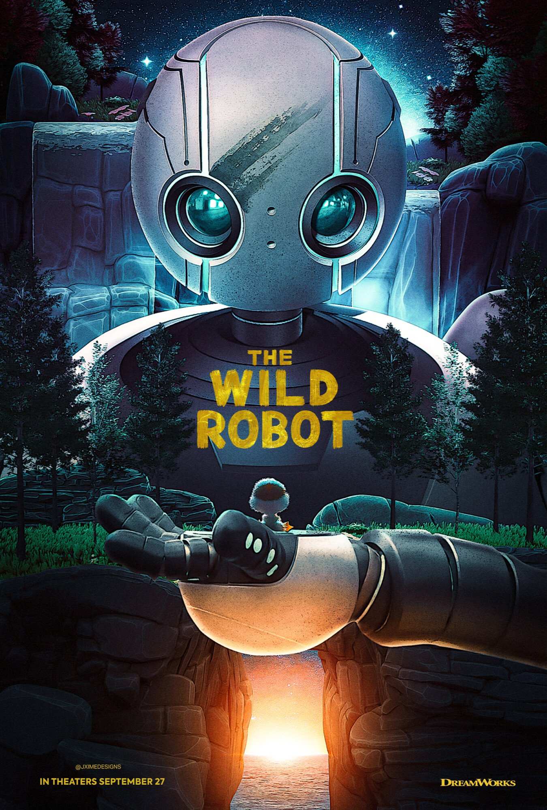

Chapter I: Awakening
THE ODYSSEY OF

THE ODYSSEY OF
MOTHERHOOD
A cold machine in a vibrant, breathing world. Raising a gosling wasn't just a mission — it was a total rewrite of her source code. Together, they redefine what it means to belong, to love, and to evolve.

